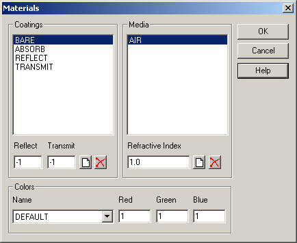

This topic describes how to import an IGES or CAD file into ASAP for analysis.
An existing IGES (*.igs) or CAD (*.gtx, *.catpart, *.catproduct) file is required.
To import IGES or CAD files into ASAP:
Select Open from the File menu in ASAP.
The Open Files dialog box is displayed.
In the Open Files dialog box, select "IGES Files (*.igs)" from the Files of
type drop-down list.
Alternatively, select CAD Files (*.gtx, *.catpart, *.catproduct) from
the Files of type drop-down menu.
Browse to the IGES OR CAD file you are importing and click Open.
The Setup Parameters dialog box opens.
Select the options you want and click OK.
The ASAP Translator window displays translated objects, as shown in this
example.
If you selected the option, Locate Duplicate Geometry on
the Setup Parameters dialog, the ASAP Translator window displays duplicates in
red, as shown in this example.
From the Edit menu, select Modify to change object
settings, or Materials to set properties or add new
coatings and media.

For information about the ASAP Translator window, and the Modify Object or
Materials dialog boxes, click Help. To accept the
settings, click OK. To close the window or dialog box,
click Cancel.
CAD Import - Locate Duplicate Geometry
ASAP can detect the presence of duplicate surface geometry during the CAD import process for CATIA, GTX, and IGES files. It reports occurrences in the applicable CAD translator dialog.